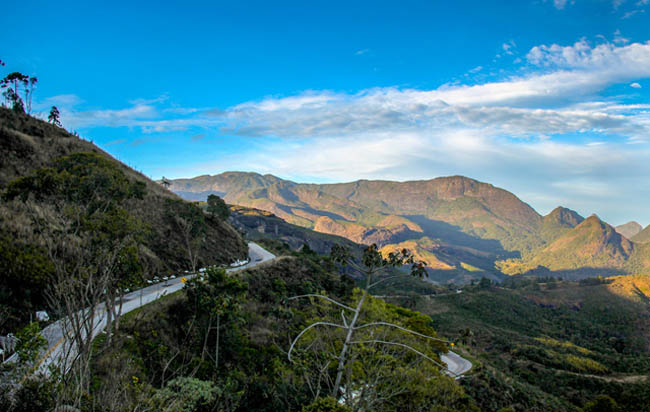
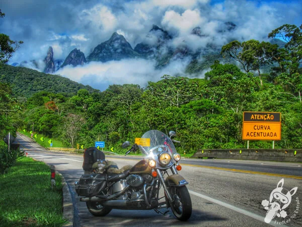

Estrada das Hortências
Rota turística serrana entre Petrópolis e Nova Friburgo, cercada de hortênsias e história.
Sobre a Rota
Rota turística entre Petrópolis, Teresópolis e Nova Friburgo, no RJ, cercada por hortênsias, montanhas, clima serrano e cidades com rica história imperial e natureza exuberante.
Informações rápidas
- Estado: Rio de Janeiro
- Ponto inicial: Petrópolis (RJ)
- Ponto final: Nova Friburgo (RJ)
- Distância: Aproximadamente 100 km
- Piso: Asfalto
- Dificuldade: Média
- Ideal para: Turismo histórico e natureza
Galeria


Saiba mais em https://caminhosdemotos.com.br/serra-das-hortensias/